图像转译
提取传统图像与故事中的识别符号，使它们进入当代日常单品。
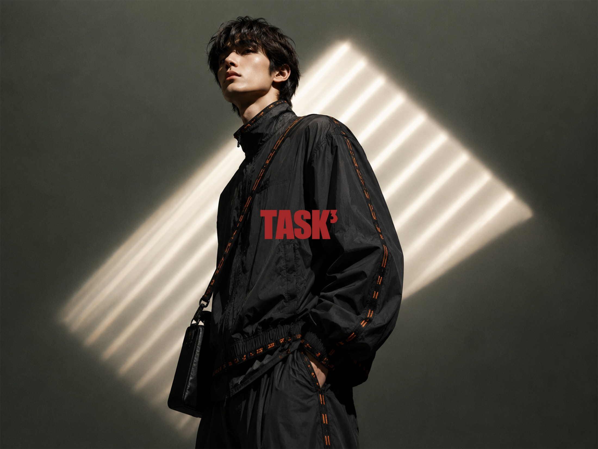
Creative Brand Planning / Fashion Promotion
从东方文化转译到完整的时尚传播实验
一个品牌，两次课程推进
TASK³ 起于创意品牌企划课程，并在时尚推广课程中继续发展。REBUILD THE EVERYDAY 是推广阶段的主题，不是另一个品牌。
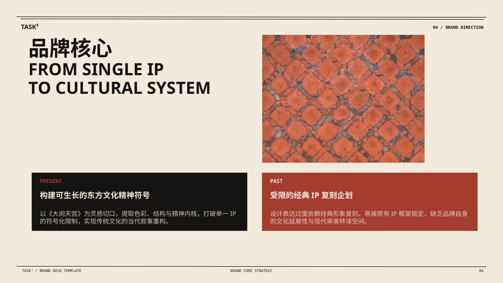
核心转向
我们不是复刻传统文化，而是让传统文化以新的形态进入当代穿着。
项目从《大闹天宫》的单一 IP 起点，转向“传统文化的现代转译”。文化不再只是图案来源，而成为可延展的品牌方法。
设计方法
提取传统图像与故事中的识别符号，使它们进入当代日常单品。
把“变化”转化为可调节、可拆分与多种穿法的服装结构。
从闽南红砖、建筑秩序和材料触感中提取色彩与纹理。
Collection Studies
女装系列以蓝色纹样、夸张廓形与层叠结构重组东方图像；男装系列以黑色机能轮廓和砖红缝线强调建筑秩序。两套系列共同验证 TASK³ 如何把文化线索转化为当代穿着语言。
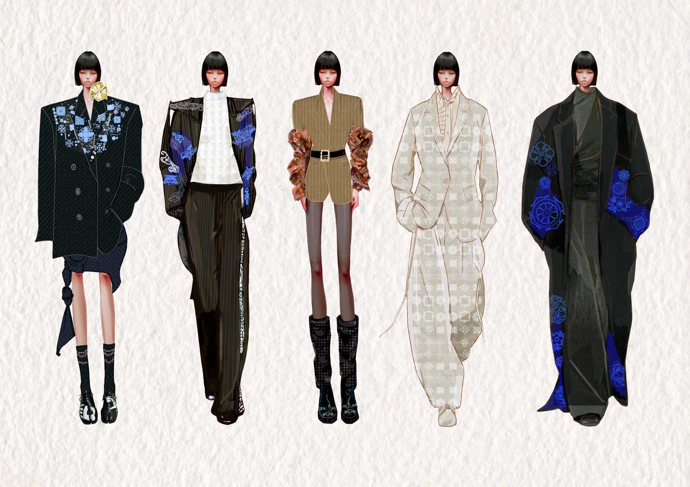
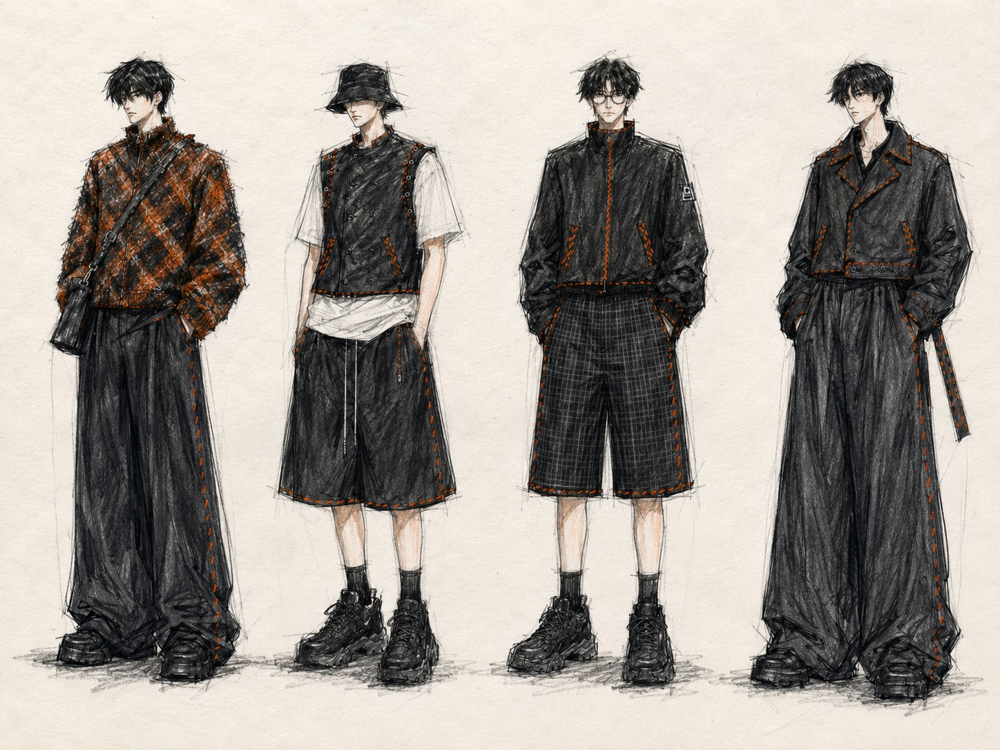
团队共完成三套服装系列，本页展示已获得完整资料的两套。
Complete Visual Book
画册以图像、结构与肌理为三条线索，将系列造型、材质细节与香气叙事编排为完整的品牌视觉节奏。视觉场景由 AI 辅助生成，页面选择、章节顺序与版式由我手动完成。
01/21
Final visual book · 21 spreads · Mobile single-page reading
AI Concept Film
当轮廓离开服装，它成为气味。影像从建筑、蓝染、白花与红花展开，让材质记忆凝结为 TASK³ 香气。
四张接触表按影像顺序展开，点击可查看完整尺寸。
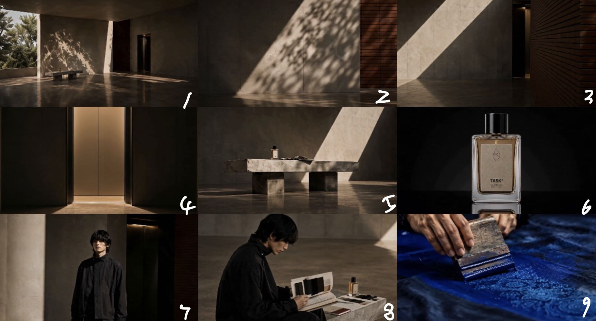
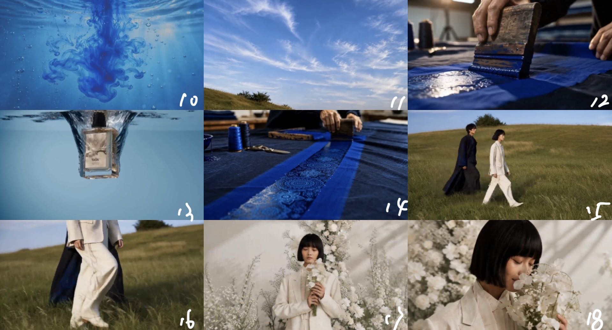
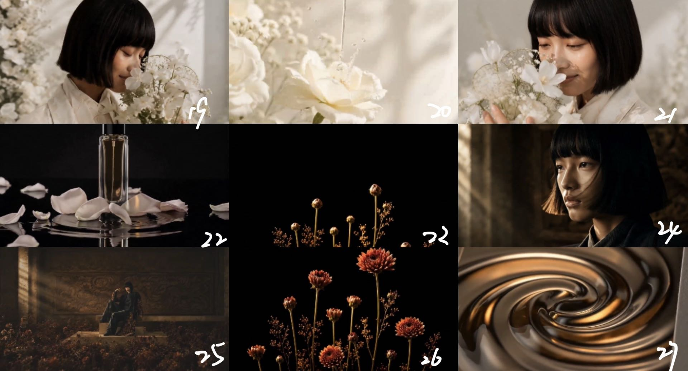
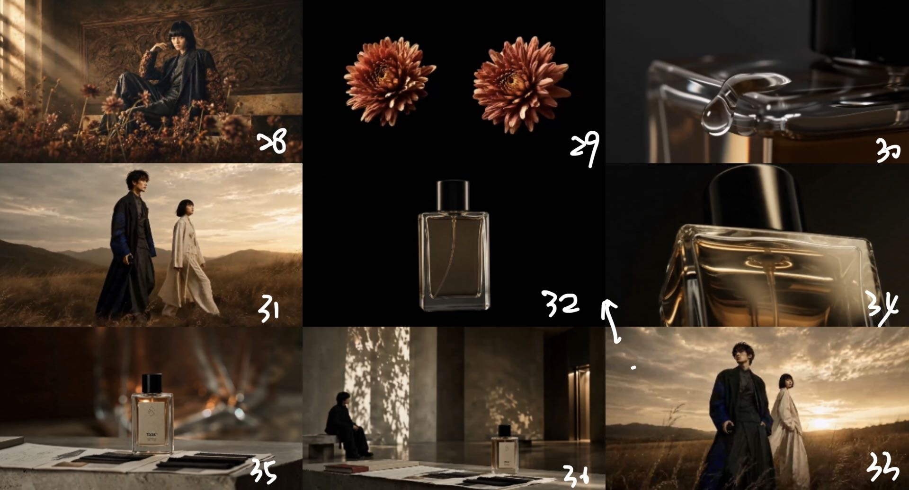
Digital Direction
该页面是时尚推广课程中的效果方向，并非真实上线网站。传播数据与运营指标均为课程目标或预测。
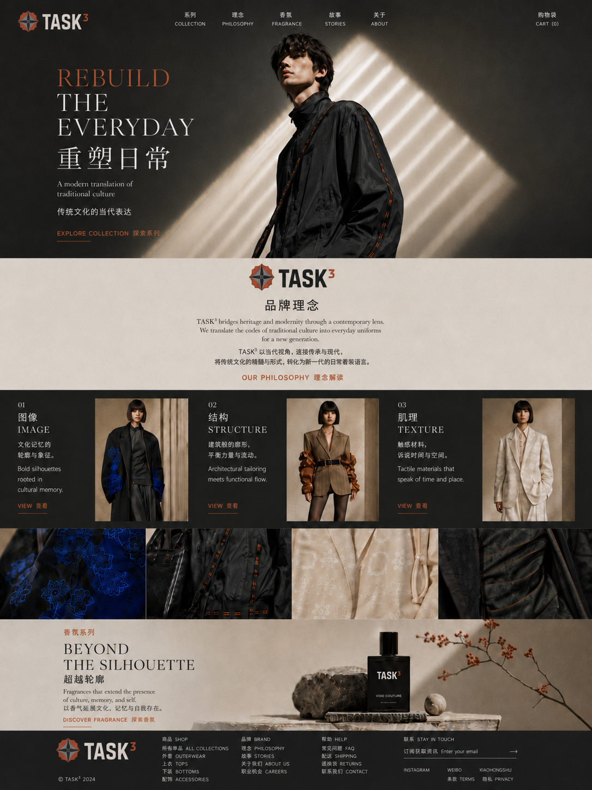
Process / Role
负责时尚推广阶段大部分 AI 视觉创作、素材筛选、内容整合与视觉方向推进，并独立完成画册排版。
三位成员分别负责各自的服装系列。当前网页只展示已收到资料的两套系列。
没有制作实物，也没有真人实拍。服装场景、香气产品和品牌网页均作为课程概念方向呈现。
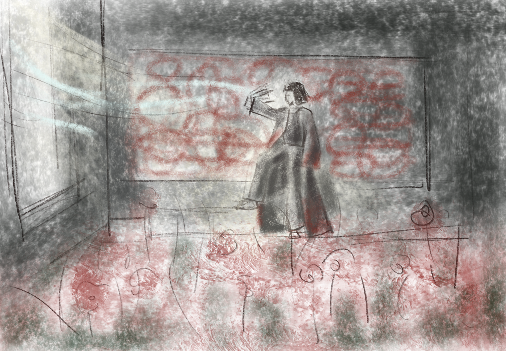
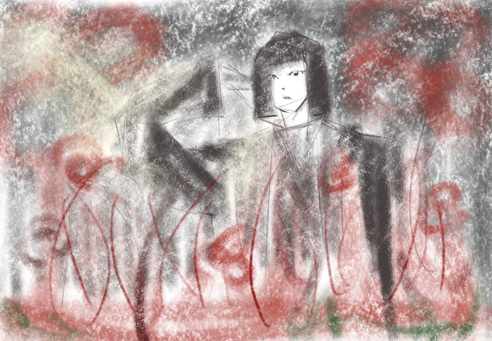